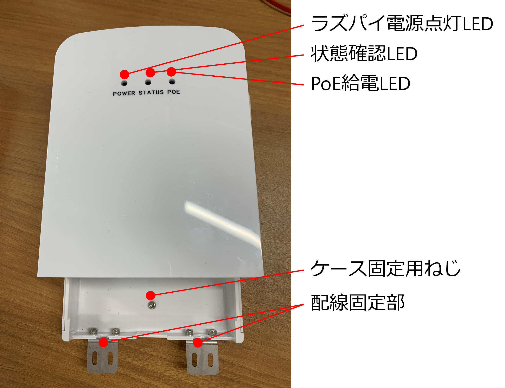
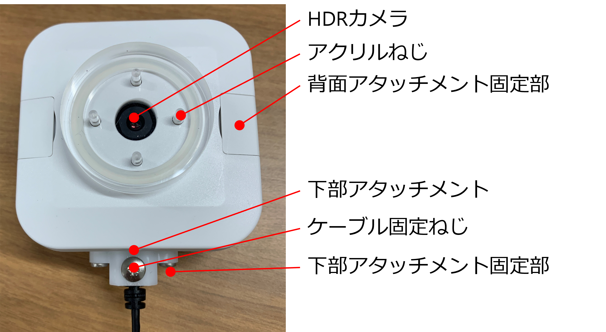

ハードウェア資料¶
PiNode3ケース¶
ケース前面
{kind=link}
ケース背面

ケース側面

ケース底面

ケース内面

ケース設計図
SPRESNESEケース¶
ケース前面
{kind=link}
ケース背面

ケース側面

ケース底面

ケース設計図
センサノードケース設計図資料¶
ケース前面

ケース上面

ケース側面

ケース設計図
強制通風筒センサモジュール設計図資料¶
ケース前面

ケース底面

ケース設計図
回路図設計資料¶
外部ファン部¶
パーツ名 |
説明 |
|---|---|
[12V] 電源 |
回路に12Vの電力を供給します。 |
[L1] インダクタ1 |
外部FAN用のフィルタとして機能するインダクタ。 |
[L2] インダクタ2 |
内部FAN用のフィルタとして機能するインダクタ。 |
[C3] コンデンサ |
回路内の高周波ノイズを除去するためのバイパスコンデンサ。 |
[D1] ダイオード |
過電圧保護用のトランジェントボルテージサプレッサ。 |
[CN1] 外部FANコネクタ |
外部FANを接続するためのコネクタ。ピン1が電源、ピン2がGND。 |
[CN3] 内部FANコネクタ |
内部FANを接続するためのコネクタ。ピン1が電源、ピン2がGND。 |
[DG] 接地 |
回路の接地ポイント。 |

Note
XH-2コネクタは、標準的な2ピンコネクタです。sideは外部FAN用、topは内部FAN用です。
RasPI_FAN部¶
パーツ名 |
説明 |
|---|---|
[5V] 電源 |
回路に5Vの電力を供給します。 |
[L3] インダクタ3 |
RasPI_FAN用のフィルタとして機能するインダクタ。 |
[L4] インダクタ4 |
回路内のノイズを低減するためのインダクタ。 |
[C4] コンデンサ |
回路内の高周波ノイズを除去するためのバイパスコンデンサ。 |
[CN5] Rs_FANコネクタ |
RasPI_FANを接続するためのコネクタ。ピン1が電源、ピン2がGND。 |
[DG] 接地 |
回路の接地ポイント。 |

Note
2P_StripHeaderコネクタは、標準的な2ピンコネクタです。Rs_FAN用です。
RUN LED部¶
パーツ名 |
説明 |
|---|---|
[5V] 電源 |
回路に5Vの電力を供給します。 |
[R8] 抵抗 |
LED電流制限用の抵抗。値は4.7kΩ。 |
[D2] LED |
動作表示用の緑色LED。500mcdの明るさ。 |
[Q1] トランジスタ |
GPIO制御用のNPNトランジスタ（DTC043ZM）。 |
[GPIO18_LED] GPIO |
LEDを制御するためのGPIOピン。 |
[DG] 接地 |
回路の接地ポイント。 |
{kind=link}
Note
この回路は、GPIOピンを使用してLEDをオン/オフ制御します。抵抗R8はLEDの電流を制限し、トランジスタQ1はGPIO信号を増幅します。
debug部¶
パーツ名 |
説明 |
|---|---|
[3v3] 電源 |
回路に3.3Vの電力を供給します。 |
[R1] 抵抗 |
TXDラインの電流制限用の抵抗。値は100Ω。 |
[R2] 抵抗 |
RXDラインの電流制限用の抵抗。値は100Ω。 |
[J1] コネクタ |
debug用の4ピンコネクタ。ピン1が3.3V、ピン2がTXD、ピン3がRXD、ピン4がGND。 |
[DG] 接地 |
回路の接地ポイント。 |
{kind=link}
Note
4P_StripHeaderコネクタは、標準的な4ピンコネクタです。デバッグ用に使用されます。
テストポイント部¶
パーツ名 |
説明 |
|---|---|
[DG] 接地 |
回路の接地ポイント。 |
[TP1] テストポイント |
回路の測定やデバッグのためのテストポイント。 |

Note
テストポイントは、回路の特定の箇所で電圧や信号を測定するためのものです。DGは接地を示しています。
RasPI拡張部¶
パーツ名 |
説明 |
|---|---|
[3v3] 電源 |
回路に3.3Vの電力を供給します。 |
[5v] 電源 |
回路に5Vの電力を供給します。 |
[C1] コンデンサ |
電源ラインのノイズフィルタリング用コンデンサ。値は0.1uF。 |
[C2] コンデンサ |
電源ラインのノイズフィルタリング用コンデンサ。値は0.1uF。 |
[R1] 抵抗 |
TXDラインの電流制限用の抵抗。値は100Ω。 |
[R2] 抵抗 |
RXDラインの電流制限用の抵抗。値は100Ω。 |
[R3] 抵抗 |
MOSIラインの電流制限用の抵抗。値は47Ω。 |
[R4] 抵抗 |
SPI_OEラインの電流制限用の抵抗。値は100Ω。 |
[R5] 抵抗 |
MISOラインの電流制限用の抵抗。値は47Ω。 |
[R6] 抵抗 |
CE0ラインの電流制限用の抵抗。値は100Ω。 |
[R7] 抵抗 |
CE1ラインの電流制限用の抵抗。値は100Ω。 |
[CN2] コネクタ |
RasPI拡張コネクタ。GPIOピンを含む多用途コネクタ。 |
[J1] コネクタ |
debug用の4ピンコネクタ。ピン1が3.3V、ピン2がTXD、ピン3がRXD、ピン4がGND。 |
[GPIO2/SDA1] ピン |
I2Cデータライン。 |
[GPIO3/SCL1] ピン |
I2Cクロックライン。 |
[GPIO4] ピン |
I2C使能信号。 |
[GPIO17] ピン |
汎用入力/出力ピン。 |
[GPIO27] ピン |
汎用入力/出力ピン。 |
[GPIO22] ピン |
汎用入力/出力ピン。 |
[GPIO10/SPI_MOSI] ピン |
SPIデータ送信ライン。 |
[GPIO9/SPI_MISO] ピン |
SPIデータ受信ライン。 |
[GPIO11/SPI_SCLK] ピン |
SPIクロックライン。 |
[GPIO8/SPI_CE0_N] ピン |
SPIデバイス選択ライン0。 |
[GPIO7/SPI_CE1_N] ピン |
SPIデバイス選択ライン1。 |
[GPIO5] ピン |
汎用入力/出力ピン。 |
[GPIO6] ピン |
汎用入力/出力ピン。 |
[GPIO13] ピン |
汎用入力/出力ピン。 |
[GPIO19] ピン |
汎用入力/出力ピン。 |
[GPIO26] ピン |
汎用入力/出力ピン。 |
[GPIO21] ピン |
汎用入力/出力ピン。 |
[GPIO20] ピン |
汎用入力/出力ピン。 |
[GPIO16] ピン |
汎用入力/出力ピン。 |
[GPIO12] ピン |
汎用入力/出力ピン。 |
[GPIO18_LED] ピン |
LED制御用ピン。 |
[DG] 接地 |
回路の接地ポイント。 |

Note
この回路は、RasPIボードと拡張ボードを接続するためのもので、多数のGPIOピンと電源ラインを含んでいます。
DIPスイッチ部¶
パーツ名 |
説明 |
|---|---|
[3v3] 電源 |
回路に3.3Vの電力を供給します。 |
[R9] 抵抗 |
プルアップ抵抗。値は10kΩ。 |
[R10] 抵抗 |
プルアップ抵抗。値は10kΩ。 |
[R11] 抵抗 |
プルアップ抵抗。値は10kΩ。 |
[R12] 抵抗 |
プルアップ抵抗。値は10kΩ。 |
[SW1] DIPスイッチ |
4ポジションのDIPスイッチ。各スイッチはGPIOピンに接続されています。 |
[GPIO12_DSW1] ピン |
DIPスイッチ1に接続されたGPIOピン。 |
[GPIO16_DSW2] ピン |
DIPスイッチ2に接続されたGPIOピン。 |
[GPIO20_DSW3] ピン |
DIPスイッチ3に接続されたGPIOピン。 |
[GPIO21_DSW4] ピン |
DIPスイッチ4に接続されたGPIOピン。 |
[DG] 接地 |
回路の接地ポイント。 |

Note
各DIPスイッチは、それぞれ対応するGPIOピンに接続されており、回路の設定やモードの切り替えに使用されます。
PoE部¶
パーツ名 |
説明 |
|---|---|
[CN4] コネクタ |
PoE接続用のコネクタ。RasPI拡張ボード用。 |
[TR1] トランス1 |
PoEデータライン用トランス1。 |
[TR3] トランス3 |
PoEデータライン用トランス3。 |
[TR0] トランス0 |
PoEデータライン用トランス0。 |
[TR2] トランス2 |
PoEデータライン用トランス2。 |

Note
この回路は、PoE（Power over Ethernet）に対応しており、データと電力を同時に伝送することができます。
PoE+回路部¶
パーツ名 |
説明 |
|---|---|
[D3] ブリッジダイオード |
ポイントTR3とTR2間の整流を行うブリッジダイオード。型番はDF1501S。 |
[D4] ブリッジダイオード |
ポイントTR1とTR0間の整流を行うブリッジダイオード。型番はDF1501S。 |
[D5] TVSダイオード |
過電圧保護用のトランジェントボルテージサプレッサ。型番はTVS 58v。 |
[D6] LED |
動作表示用の青色LED。500mcdの明るさ。 |
[L5] インダクタ |
フィルタとして機能するインダクタ。型番はMPZ2012S102AT。 |
[L6] インダクタ |
フィルタとして機能するインダクタ。型番はMPZ2012S102AT。 |
[L7] インダクタ |
フィルタとして機能するインダクタ。型番はMPZ2012S102AT。 |
[L8] インダクタ |
フィルタとして機能するインダクタ。型番はMPZ2012S102AT。 |
[L9] インダクタ |
フィルタとして機能するインダクタ。型番はMPZ2012S102AT。 |
[L10] インダクタ |
フィルタとして機能するインダクタ。型番はMPZ2012S102AT。 |
[R13] 抵抗 |
LED電流制限用の抵抗。値は10kΩ。 |
[R14] 抵抗 |
0Ωのジャンパ抵抗。値は0Ω。 |
[R15] 抵抗 |
0Ωのジャンパ抵抗。値は0Ω。 |
[C5] コンデンサ |
電源ラインのノイズフィルタリング用コンデンサ。値は4.7nF、1500V。 |
[C6] コンデンサ |
電源ラインのノイズフィルタリング用コンデンサ。値は10nF、100V。 |
[C7] コンデンサ |
電源ラインのノイズフィルタリング用コンデンサ。値は470uF、25V。 |
[C8] コンデンサ |
電源ラインのノイズフィルタリング用コンデンサ。値は4.7nF、1500V。 |
[U1] PoEモジュール |
PoE+モジュール。型番はAG5412。 |
[TP2] テストポイント |
12Vのテストポイント。 |
[DG] 接地 |
回路の接地ポイント。 |

Note
この回路は、PoE+（Power over Ethernet Plus）に対応しており、データと電力を同時に伝送することができます。
3.3Vレギュレータ部¶
パーツ名 |
説明 |
|---|---|
[5V] 電源 |
回路に5Vの電力を供給します。 |
[C17] コンデンサ |
入力電圧の安定化用コンデンサ。値は470uF、10V。 |
[C19] コンデンサ |
入力電圧の安定化用コンデンサ。値は1uF、25V。 |
[U3] レギュレータ |
3.3V、800mAの出力を提供するレギュレータ。型番はNJM2845。 |
[C18] コンデンサ |
出力電圧の安定化用コンデンサ。値は4.7uF。 |
[TP4] テストポイント |
3.3Vのテストポイント。 |
[DG] 接地 |
回路の接地ポイント。 |
{kind=link}
Note
この回路は、5Vを安定した3.3V出力に変換するレギュレータです。高容量のコンデンサにより、入力電圧および出力電圧の安定性が向上します。
Buckコンバータ部¶
パーツ名 |
説明 |
|---|---|
[12V] 電源 |
回路に12Vの電力を供給します。 |
[L12] インダクタ |
電源ラインのノイズフィルタリング用インダクタ。型番はBLM31KN471SN1。 |
[C11] コンデンサ |
電源ラインのノイズフィルタリング用コンデンサ。値は10uF、25V。 |
[C12] コンデンサ |
電源ラインのノイズフィルタリング用コンデンサ。値は10uF、25V。 |
[C13] コンデンサ |
電源ラインのノイズフィルタリング用コンデンサ。値は0.1uF。 |
[C14] コンデンサ |
出力ラインのノイズフィルタリング用コンデンサ。 |
[C15] コンデンサ |
出力ラインのノイズフィルタリング用コンデンサ。値は0.1uF。 |
[C16] コンデンサ |
フィードバック安定化用コンデンサ。値は10nF。 |
[C9] コンデンサ |
出力ラインのノイズフィルタリング用コンデンサ。値は22uF、10V。 |
[C10] コンデンサ |
出力ラインのノイズフィルタリング用コンデンサ。値は22uF、10V。 |
[R18] 抵抗 |
フィードバック安定化用抵抗。値は47kΩ。 |
[R20] 抵抗 |
フィードバック安定化用抵抗。値は10kΩ。 |
[R21] 抵抗 |
フィードバック分圧用抵抗。値は30kΩ。 |
[R16] 抵抗 |
出力電圧安定化用抵抗。 |
[R19] 抵抗 |
出力電圧安定化用抵抗。 |
[U2] Buckコンバータ |
3V-17V入力、4A出力の降圧コンバータ。型番はTPS564257。 |
[TP3] テストポイント |
5Vのテストポイント。 |
[EN] 制御 |
イネーブル制御ピン。 |
[DG] 接地 |
回路の接地ポイント。 |
{kind=link}
Note
この回路は、12Vを安定した5V出力に変換する降圧コンバータです。EN制御により、起動電圧は6.7V、停止電圧は5.7Vです。
I2Cレベルシフタ部¶
パーツ名 |
説明 |
|---|---|
[3v3] 電源 |
回路に3.3Vの電力を供給します。 |
[SCL1] クロックライン |
I2Cクロック信号の入力。 |
[SDA1] データライン |
I2Cデータ信号の入力。 |
[R22, R30, R36] 抵抗 |
プルアップ抵抗。値は200kΩ。 |
[R25, R31, R37] 抵抗 |
シグナルコンディショニング用抵抗。値は2kΩ。 |
[R26, R32, R38] 抵抗 |
シグナルコンディショニング用抵抗。値は2kΩ。 |
[C20, C26, C29] コンデンサ |
電源ラインのノイズフィルタリング用コンデンサ。値は0.1uF。 |
[C21, C27, C32] コンデンサ |
スナバ回路用コンデンサ。値は100pF。 |
[D6, D14, D19] バリスタ |
過電圧保護用バリスタ。定格電圧は20V。 |
[D8, D15, D20] ダイオード |
I2C信号ラインの保護用ダイオード。 |
[U4, U8, U9] レベルシフタ |
I2Cレベルシフタ。型番はTXS0108E。 |
[Q2, Q4, Q6] トランジスタ |
GPIO制御用のNPNトランジスタ（DTC043ZM）。 |
[CN1] コネクタ |
I2C信号および電源用コネクタ。 |
[NODE] コネクタ |
接続される外部デバイス用のコネクタ。 |
[DG] 接地 |
回路の接地ポイント。 |

Note
この回路は、I2C信号のレベルシフトを行い、異なる電圧のI2Cバス間で信号を送受信できるようにします。また、過電圧保護およびノイズフィルタリングも行います。
I2Cレベルシフタ部¶
パーツ名 |
説明 |
|---|---|
[3v3] 電源 |
回路に3.3Vの電力を供給します。 |
[5v] 電源 |
回路に5Vの電力を供給します。 |
[SCL1] クロックライン |
I2Cクロック信号の入力。 |
[SDA1] データライン |
I2Cデータ信号の入力。 |
[R27, R33] 抵抗 |
プルアップ抵抗。値は200kΩ。 |
[R28, R34] 抵抗 |
シグナルコンディショニング用抵抗。値は2kΩ。 |
[R29, R35] 抵抗 |
シグナルコンディショニング用抵抗。値は2kΩ。 |
[C22, C28] コンデンサ |
電源ラインのノイズフィルタリング用コンデンサ。値は0.1uF。 |
[C26, C31] コンデンサ |
スナバ回路用コンデンサ。値は100pF。 |
[D10, D17] バリスタ |
過電圧保護用バリスタ。定格電圧は20V。 |
[D11, D18] ダイオード |
I2C信号ラインの保護用ダイオード。 |
[U5, U7] レベルシフタ |
I2Cレベルシフタ。型番はTCA39306。 |
[Q3, Q5] トランジスタ |
GPIO制御用のNPNトランジスタ（DTC043ZM）。 |
[CN6, CN8] コネクタ |
I2C信号および電源用コネクタ。 |
[L13, L16] インダクタ |
電源ラインのノイズフィルタリング用インダクタ。型番はMPZ2012S102AT。 |
[L14, L17] インダクタ |
電源ラインのノイズフィルタリング用インダクタ。型番はMPZ2012S102AT。 |
[SHT-85] センサ |
湿度および温度センサ。接続されたコネクタCN6とCN8からデータを取得します。 |
[GPIO13_I2CEN4#] ピン |
GPIO制御ピン。 |
[GPIO19_I2CEN5#] ピン |
GPIO制御ピン。 |
[DG] 接地 |
回路の接地ポイント。 |

Note
この回路は、I2C信号のレベルシフトを行い、異なる電圧のI2Cバス間で信号を送受信できるようにします。また、過電圧保護およびノイズフィルタリングも行います。
STEM回路部¶
パーツ名 |
説明 |
|---|---|
[CN9] コネクタ |
STEM信号用コネクタ。XH-3タイプ。 |
[STEM+] 信号ライン |
STEM信号の正極。 |
[STEM-] 信号ライン |
STEM信号の負極。 |
[R41] 抵抗 |
信号ラインの安定化用抵抗。値は0Ω。 |
[C35] コンデンサ |
信号ラインのノイズフィルタリング用コンデンサ。値は0.1uF。 |
[D21, D22] バリスタ |
過電圧保護用バリスタ。定格電圧は20V。 |
[L19] インダクタ |
電源ラインのノイズフィルタリング用インダクタ。型番はMPZ2012S102AT。 |
[AG] 接地 |
アナログ接地ポイント。 |
[12va] 電源 |
回路に12Vのアナログ電力を供給します。 |

Note
この回路は、STEM信号の過電圧保護およびノイズフィルタリングを行います。信号の正極と負極はそれぞれSTEM+およびSTEM-ラインを通じて接続されます。
FRUIT回路部¶
パーツ名 |
説明 |
|---|---|
[CN10] コネクタ |
FRUIT信号用コネクタ。XH-3タイプ。 |
[FRUIT+] 信号ライン |
FRUIT信号の正極。 |
[FRUIT-] 信号ライン |
FRUIT信号の負極。 |
[R45] 抵抗 |
信号ラインの安定化用抵抗。値は0Ω。 |
[C41] コンデンサ |
信号ラインのノイズフィルタリング用コンデンサ。値は0.1uF。 |
[D23, D24] バリスタ |
過電圧保護用バリスタ。定格電圧は20V。 |
[L20] インダクタ |
電源ラインのノイズフィルタリング用インダクタ。型番はMPZ2012S102AT。 |
[AG] 接地 |
アナログ接地ポイント。 |
[12va] 電源 |
回路に12Vのアナログ電力を供給します。 |
{kind=link}
Note
この回路は、FRUIT信号の過電圧保護およびノイズフィルタリングを行います。信号の正極と負極はそれぞれFRUIT+およびFRUIT-ラインを通じて接続されます。
信号変換回路部¶
パーツ名 |
説明 |
|---|---|
[STEM+] 信号ライン |
入力信号の正極。 |
[STEM-] 信号ライン |
入力信号の負極。 |
[R42] 抵抗 |
信号ラインの抵抗。値は47kΩ。 |
[R39] 抵抗 |
信号ラインの抵抗。値は12kΩ。 |
[R40, R43] 抵抗 |
信号ラインの抵抗。値は30kΩ。 |
[R44] 抵抗 |
フィードバック抵抗。値は12kΩ。 |
[C33, C34, C39] コンデンサ |
電源ラインおよび信号ラインのノイズフィルタリング用コンデンサ。値は0.1uF、1nF。 |
[C38] コンデンサ |
信号ラインのノイズフィルタリング用コンデンサ。値は0.1uF。 |
[C40] コンデンサ |
フィードバック安定化用コンデンサ。値は33pF。 |
[U9A] オペアンプ |
信号変換用オペアンプ。型番はLMC6482。 |
[AG] 接地 |
アナログ接地ポイント。 |
[5va] 電源 |
回路に5Vのアナログ電力を供給します。 |
[STEM_v] 出力信号ライン |
変換後の信号出力ライン。 |

Note
この回路は、入力信号を変換し、5Vの入力を2Vの出力に変換します。オペアンプを使用して信号を処理し、精度の高い出力を提供します。
FRUIT信号変換回路部¶
パーツ名 |
説明 |
|---|---|
[FRUIT+] 信号ライン |
入力信号の正極。 |
[FRUIT-] 信号ライン |
入力信号の負極。 |
[R48] 抵抗 |
信号ラインの抵抗。値は47kΩ。 |
[R46] 抵抗 |
信号ラインの抵抗。値は10kΩ。 |
[R47, R49] 抵抗 |
信号ラインの抵抗。値は10kΩ。 |
[R50] 抵抗 |
フィードバック抵抗。値は10kΩ。 |
[C43, C44, C46] コンデンサ |
電源ラインおよび信号ラインのノイズフィルタリング用コンデンサ。値は0.1uF、1nF。 |
[C45] コンデンサ |
信号ラインのノイズフィルタリング用コンデンサ。値は0.1uF。 |
[C47] コンデンサ |
フィードバック安定化用コンデンサ。値は33pF。 |
[U9B] オペアンプ |
信号変換用オペアンプ。型番はLMC6482。 |
[AG] 接地 |
アナログ接地ポイント。 |
[5va] 電源 |
回路に5Vのアナログ電力を供給します。 |
[FRUIT_v] 出力信号ライン |
変換後の信号出力ライン。 |

Note
この回路は、入力信号を変換し、2Vの入力を2Vの出力に変換します。オペアンプを使用して信号を処理し、精度の高い出力を提供します。
ADC回路部¶
パーツ名 |
説明 |
|---|---|
[STEM_v] 信号ライン |
STEM信号の変換後の電圧ライン。 |
[FRUIT_v] 信号ライン |
FRUIT信号の変換後の電圧ライン。 |
[R52, R54] 抵抗 |
信号ラインの抵抗。値は1kΩ。 |
[C51, C52] コンデンサ |
信号ラインのノイズフィルタリング用コンデンサ。値は10nF。 |
[TP8] テストポイント |
STEM信号のテストポイント。 |
[TP10] テストポイント |
FRUIT信号のテストポイント。 |
[TP7] テストポイント |
2.048V基準電圧のテストポイント。 |
[TP9] テストポイント |
CE0信号のテストポイント。 |
[TP11] テストポイント |
アナログ接地のテストポイント。 |
[U10] 基準電圧源 |
2.048Vの基準電圧を生成するデバイス。型番はADR5040。 |
[U11] ADC |
12ビットのSAR ADC。型番はMCP3204。 |
[L23] インダクタ |
電源ラインのノイズフィルタリング用インダクタ。型番はMPZ2012S102AT。 |
[R51] 抵抗 |
基準電圧源の電流制限用抵抗。値は8.2kΩ。 |
[R53] 抵抗 |
SPIバスの信号制御用抵抗。値は47Ω。 |
[R55, R56] 抵抗 |
信号ラインのプルダウン抵抗。値は100kΩ。 |
[C49] コンデンサ |
基準電圧ラインのノイズフィルタリング用コンデンサ。値は1uF、25V。 |
[C50] コンデンサ |
電源ラインのノイズフィルタリング用コンデンサ。値は0.1uF。 |
[3v3] 電源 |
回路に3.3Vの電力を供給します。 |
[2v048] 電源 |
基準電圧源からの2.048Vの電力を供給します。 |
[AG] アナログ接地 |
アナログ接地ポイント。 |
[DG] デジタル接地 |
デジタル接地ポイント。 |

Note
この回路は、STEMおよびFRUIT信号を12ビットのSAR ADC（MCP3204）でデジタル化し、基準電圧源（ADR5040）を使用して高精度な測定を行います。各信号ラインにはノイズフィルタリングのためのコンデンサが配置されています。
デカップリングコンデンサ¶
パーツ名 |
説明 |
|---|---|
[C53] コンデンサ |
電源ラインのノイズフィルタリング用コンデンサ。値は0.1uF。 |
[3v3] 電源 |
回路に3.3Vの電力を供給します。 |
[DG] デジタル接地 |
デジタル接地ポイント。 |

Note
このデカップリングコンデンサは、3.3V電源ラインのノイズを除去し、安定した電力供給を実現します。
SPI回路部¶
パーツ名 |
説明 |
|---|---|
[GPIO25_SPI_OE#] 信号ライン |
SPI出力イネーブル信号ライン。 |
[CE1#] 信号ライン |
SPIチップセレクト信号ライン。 |
[SCLK] 信号ライン |
SPIクロック信号ライン。 |
[MOSI] 信号ライン |
SPIマスター出力スレーブ入力信号ライン。 |
[MISO] 信号ライン |
SPIマスター入力スレーブ出力信号ライン。 |
[TP12] テストポイント |
OE信号のテストポイント。 |
[TP13] テストポイント |
CE1信号のテストポイント。 |
[TP14] テストポイント |
SCLK信号のテストポイント。 |
[TP15] テストポイント |
MOSI信号のテストポイント。 |
[TP16] テストポイント |
MISO信号のテストポイント。 |
[U12A-D] バッファ |
SPI信号バッファ。型番はSN74LVC125A。 |
[R57, R58, R59, R60, R61] 抵抗 |
信号ラインの抵抗。値は27Ωおよび47Ω。 |
[L24] インダクタ |
電源ラインのノイズフィルタリング用インダクタ。型番はMPZ2012S102AT。 |
[C54] コンデンサ |
電源ラインのノイズフィルタリング用コンデンサ。値は0.1uF。 |
[D25, D26, D27, D28, D29] |
バリスタ 過電圧保護用バリスタ。定格電圧は20V。 |
[CN11] コネクタ |
SPI信号および電源用コネクタ。XH-6タイプ。 |
[3v3] 電源 |
回路に3.3Vの電力を供給します。 |
[AG] アナログ接地 |
アナログ接地ポイント。 |
[DG] デジタル接地 |
デジタル接地ポイント。 |
{kind=link}
Note
この回路は、SPI信号のバッファリングおよび保護を行い、異なる電圧のSPIバス間で信号を送受信できるようにします。各信号ラインには過電圧保護およびノイズフィルタリングが施されています。
I2C分岐コネクタ基板¶
パーツ名 |
説明 |
|---|---|
[CN13] コネクタ |
RasPIからのI2C信号および電源用コネクタ。PH-8タイプ。 |
[CN12] コネクタ |
SHT-25センサ用のI2C信号および電源用コネクタ。XH-4タイプ。 |
[CN14, CN15] コネクタ |
S1133センサ用のI2C信号および電源用コネクタ。XH-4タイプ。 |
[3v3] 電源 |
回路に3.3Vの電力を供給します。 |
[SCL1, SCL2, SCL3] 信号ライン |
I2Cクロック信号ライン。 |
[SDA1, SDA2, SDA3] 信号ライン |
I2Cデータ信号ライン。 |
[DG] デジタル接地 |
デジタル接地ポイント。 |

Note
この基板は、RasPIからのI2C信号を複数のセンサ（SHT-25およびS1133）に分岐させるためのコネクタ基板です。各センサはI2Cバスを共有し、3.3Vの電源と接地を共有します。